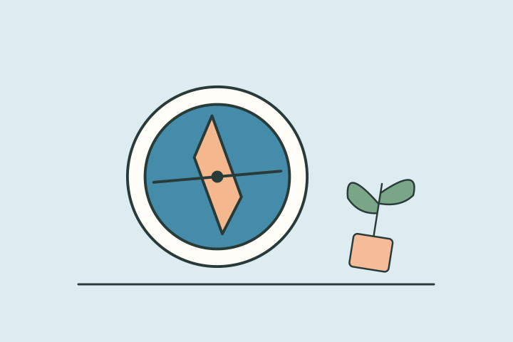

나의 결과는?
골목 탐험 모드
추천 피드 밖에서 나만의 장면을 발견하는 시간이런 타입이에요
당신의 선택은 주변을 걷고 우연한 풍경을 만나는 쪽에 모였어요. 유명한 장소를 다 챙기기보다 오늘 내 눈에 들어오는 작은 변화를 찾을 때 재미를 느끼는 편이에요.
이런 순간, 나답죠
휴대폰을 내려놓으면 가까운 길을 직접 걸어보고 싶어져요. 리뷰로 본 유명한 곳보다 오늘 내 눈에 들어온 가게와 풍경이 궁금해요.
- 새로운 풍경을 발견함
- 정해진 계획 없이 즐김
- 주변을 세밀하게 봄
놓치기 쉬운 부분
걷는 시간에도 많은 장소를 확인하려 하면 화면 속 목록과 다를 바 없어질 수 있어요. 아무것도 발견하지 못한 길도 괜찮은 산책이에요.
오늘 해볼 한 가지
오늘 산책에서는 목적지 하나를 줄이고 평소 지나치던 길에 잠깐 머물러보세요.
오프라인 키워드
한 블록발견우연한 풍경새로운 풍경을정해진 계획
다른 타입과 나란히 보면
재미로 보는 성향 콘텐츠예요. 전문적인 심리 검사나 진단이 아니며, 타입 간 관계도 비교를 위한 이야기예요.
답변별 유형 점수를 더해 가장 높은 타입을 보여줘요. 동점이면 손끝 몰입 모드 → 골목 탐험 모드 → 익숙한 평온 모드 → 눈앞의 대화 모드 순서에서 앞선 타입이 표시돼요.
읽어봤다면, 친구와 비교해볼까요?
다음 테스트도 이어서 보기